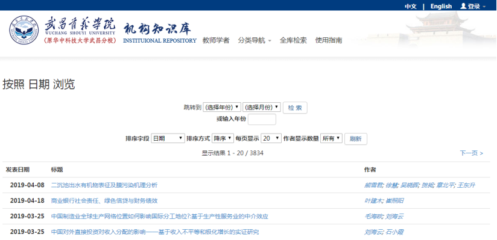

用户使用手册
（试行）
图书馆
目 录
1 系统简介
武昌首义学院机构知识库（简称WSYUIR）作为支撑学术研究的基础设施，旨在提高学术资源的可见度和展示度，促进学术资源的共享和利用。该库收集并保存我的大学教师和科研人员的学术与智力成果；为我的大学教师，科研人员和学生的学术研究和学术交流提供系列服务, 包括存档，管理，发布，检索和开放共享。
1.1系统界面
该系统界面提供教师学者、分类导航、使用指南、全库检索版块的内容，首页面同时提供检索框、最近收录、学者推荐、院系导航、成果分类浏览、被收录情况等栏目信息。 见图1.1-1

1.2最近收录
该界面提供按提交日期排序的最新10条收录信息。见图1.2-1.
1.3 学者推荐
随机显示九位知识库中的学者。主页上显示这些作者的姓名、所属院系，点击进入后显示与该作者相关的信息和成果列表。同时主页还给出具有按学者大师、学科带头人、骨干教师、骨干教师培养对象聚类的相关超链。见图1.3-1。
1.4院系导航
在主页上显示了机构知识库中7个院系、2个课部和校直属、附属单位数量，点击可以查看各单位成果详细信息。见图1.4-1。
1.5成果分类
该界面显示科研项目、教师著作、学位论文、期刊论文、会议论文等分别被点击次数最多的10条成果。见图1.5-1。
l 点击蓝色模块可以对应进入每类成果，选择进入每个成果可查看每项成果的作者、日期、出处、关键词、摘要等信息，还可以通过中国知网、读秀、百度学术等原文查看。见图1.5-2。
1.6被收录情况
在主页上显示我校机构知识库相关知识成果被SCI、SCI-E、EI、CPCI-S、CPCI-SSH、CSCD收录信息。见图1.6-1。选择进入每个成果可查看每项成果的作者、日期、出处、关键词、摘要等信息，还可以通过中国知网、读秀、百度学术等原文查看。
2教师学者
2.1 按院系单位浏览
要浏览相关院系的学者信息，点击“按院系单位”按钮，展开各院系信息，院系单位名称灰黑色表示该院系单位未有提供学者信息，点击院系名称将会展示系统中该院系单位的所有学者信息。同时还可点击“学者大师”、”学科带头人”、”骨干教师”、”骨干教师培养对象”查看对应的分类学者，见图2.1-1 和 图2.1-2。

学者信息页面，显示各学者的头像、姓名、被浏览次数等信息；点击学者头像或姓名，将会进入单个学者的详细信息页面。见图2.1-2。
2.2 学者详细页面
学者详细信息页面展示学者单位、个人主页、合作者、机构知识库中与学者相关的所有成果信息等。见图2.2-1
3 分类导航
首页检索框下的五个蓝色按钮是系统提供的五种基本浏览功能，该功能允许用户以特定的方式浏览条目的列表，见图3-1。
3.1 按院系单位浏览
按院系单位浏览，显示WSYUIR的全部院系单位以及各院系单位下所包含的学术成果类型。同时，还显示各院系单位的条目总数及其所隶属的每种学术成果类型的条目数。见图3.1-1。
3.2 按发表日期浏览
用户可以按照机构知识库中所有条目发表日期的时间先后进行浏览。系统默认是按照发表日期的升序方式来排序，用户也可选择按照标题/提交日期/发表日期的升序方式来排序。
默认状态下，每页显示20个条目，用户也可自行选择其它多种所显示条目数量。此外，用户还可选择特定的出版时间（包括年份和月份），以此快速“搜寻”某一时间段内出版的条目。见图3.2-1。

3.3 按作者浏览
用户可以按照机构知识库中所有条目的作者姓名的字母顺序进行浏览。系统默认是按照作者姓名的升序方式来排序，用户可自行选择按照作者的降序方式来排序。
默认状态下，每页显示20个条目，用户也可自行选择其它多种所显示条目数量。见图3.3-1。
3.4 按题名浏览
用户可以按照机构知识库中所有条目题名的字母顺序进行浏览。系统默认是按照题名的升序方式来排序，用户可自行选择按照提交日期/发表日期/题名的降序方式来排序。
默认状态下，每页显示20个条目，用户也可自行选择其它多种所显示条目数量。见图3.4-1。
3.5 按关键词浏览
用户可以按照机构知识库中所有条目的主题的字母顺序进行浏览。系统默认是按照主题的升序方式来排序，用户可自行选择按照主题的降序方式来排序。
默认状态下，每页显示20个条目，用户也可自行选择其它多种所显示条目数量。
用户也可“输入前几位字符”来快速搜寻某一特定主题的条目。见图3.5-1。
3.6浏览功能说明
排序方式：按院系单位、标题、作者、关键词、发表日期等方式浏览，都是按照先数字、再英文、最后是中文的方式，数字按照0-9的顺序来排序，英文按照字母顺序A-Z来排序，中文的排在Z之后且中文按照相应浏览方式的第一个汉字的音序来排序。若想快速定位到某个中文条目，建议以搜索的方式来查找，即通过“输入前几位字符”，快速、准确地进行检索结果定位。
4 全库检索功能
系统支持多种检索功能，可以检索机构知识库中的全部数据，并获取全文。
4.1 检索框
要检索机构知识库的所有内容，可以使用检索框，见图4.1-1。
说明：检索词间若有空格将默认使用AND连接各关键词，如检索题名= Politics Profit，则检索结果为题名中既含Politics又含Profit两个关键词的所有条目（与各关键词在题名中所处的位置无关）
4.2 检索结果
点击“全库检索”按钮，页面中“检索结果”默认显示的是最新提交的20条条目，见图4.3-1。
在检索框中输入某一关键词（以输入“武昌首义学院”为例）进行检索，得到的检索结果显示在页面“检索结果”下方，每页显示20条条目，“结果过滤”，按检索结果进行自动更新。见图4.2-2。